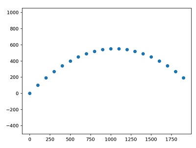
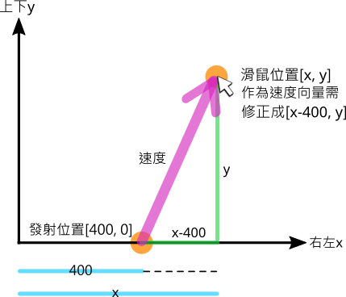

📚 以Scratch及Python趣玩物理彈跳碰撞
- PhET是一個科學的互動式模擬教材網站，試試看以下的拋體運動模擬：
- 「Projectile Motion_拋射運動」

- (資料來源:1)
- 這樣的程式是如何寫出來的。由於Scratch有著非常優秀的遊戲與動畫開發介面，試試看用Scratch來做出砲彈模擬吧！
📕 Scratch砲彈模擬(4)
- 物體位置的表達
-
在Scratch中如何表達物體的位移呢？
-

-
物體運動基本公式
-

- 推鉛球，是一個常見的運動會比賽項目。
-
(1分58秒, 資料來源:2)
鉛球丟出後，就是一個在空中的拋物體。


高速攝影機的慢動作效果：
📒 物理引擎(2)
- 令人驚豔的Scratch 2D衝量物理引擎，這是如何做出來的呢？
-
「Scratch: Impulse 2D Physics Engine 1.3.0 衝力2D物理引擎中文版」 by beardad1975 , 原作者griffpatch
-

2D衝量物理引擎，使用與憤怒鳥遊戲相同的原理，以下為展示影片(原作者以C++實作)
-
(36秒, 資料來源:5)
-
Python的物理引擎函式庫
pymunk物理引擎並沒有繪圖功能, 可以先以print印出物體的位置。
範例程式 pymunk模擬物體運動
import pymunk
space = pymunk.Space() # 物理模擬空間
space.gravity = 0,0 # 重力加速度
body = pymunk.Body() # 產生物體
body.position = 0,0 # 位置
circle = pymunk.Circle(body, 10) # 產生圓形 半徑
space.add(body, circle) # 圓形物體加入空間
circle.mass = 1 # 質量
body.velocity = 100, 0 # 初始速度
seconds = 0
dt = 1 # 步進時間
for i in range(20): # 重複次數
x, y = body.position
print(f'{seconds:.1f}秒 -- 位置(x:{x:.1f},y:{y:.1f})')
space.step(dt) # 模擬下一步
seconds += dt

利用matplotlib來畫出物體移動的座標軌跡。
範例程式 pymunk模擬matplotlib標示
import pymunk
import matplotlib.pyplot as plt
plt.axis('equal')
x_list, y_list = [], []
space = pymunk.Space() # 物理模擬空間
space.gravity = 0,0 # 重力加速度
body = pymunk.Body() # 產生物體
body.position = 0,0 # 位置
circle = pymunk.Circle(body, 10) # 產生圓形 半徑
space.add(body, circle) # 圓形物體加入空間
circle.mass = 1 # 質量
body.velocity = 100, 0 # 初始速度
seconds = 0
dt = 1 # 步進時間
for i in range(20): # 重複次數
x, y = body.position
print(f'{seconds:.1f}秒 -- 位置(x:{x:.1f},y:{y:.1f})')
x_list.append(body.position.x) # 記錄x位置
y_list.append(body.position.y) # 記錄y位置
space.step(dt) # 模擬下一步
seconds += dt
plt.plot(x_list, y_list, 'o') # 標示xy位置
plt.show()
-
如何執行出以下的結果呢？

如何執行pymunk的官方範例
- 於命令列執行，可列出pymunk的官方範例 (需先安裝pygame)
python -m pymunk.examples -l
- 想想看，使用物理引擎的優點是什麼？有什麼門檻嗎？
- Py4t的物理模組封裝了pymunk，當初的目的是讓青少年能簡易使用(物理模組原始碼)
- 以下我們將使用來Py4t來做物理模擬。
📗 噴射拋體(2)
拋體運動
- 什麼是拋體運動？
-
(1分05秒, 資料來源:6)
如果想用程式來模擬拋體，要先決定發射位置與速度。
- 將圓球發射位置定在視窗左下角，用滑鼠的座標位置當作速度的大小，操作起來較為直覺，如下圖：
-

一起來動手寫寫看。
範例程式 拋體運動 - - - - - - - (噴射拋體1/2 新檔)
# 請按住Alt，並使用滑鼠右鍵移除地板地形
from 物理模組 import *
舞台 = 物理引擎(800,600)
def 按下滑鼠時(x, y):
物體 = 新增圓球(半徑=20)
物體.位置 = [0, 0]
物體.速度 = [x, y]
模擬主迴圈()
連續噴射
- 完成了基本的拋體運動程式，接下來可以做出什麼變化呢？
-
(9秒, 資料來源:7)
讓我們把多顆小圓球當成拋體，做出噴水的簡單模擬。
這次將發射位置定在視窗中間底部，當發射位置改變時，要如何用滑鼠來呈現速度？為了達到直覺的操作，需做以下的修正：
-

一起來動手寫寫看。
範例程式 連續噴射 - - - - - - - (噴射拋體2/2 接續)
# 請按住Alt，並使用滑鼠右鍵移除地板地形
from 物理模組 import *
舞台 = 物理引擎(800,600)
def 拖曳滑鼠時(x, y, dx, dy):
物體 = 新增圓球(半徑=5)
物體.位置 = [400, 0]
物體.速度 = [(x - 400) * 2, y * 2]
模擬主迴圈()
📘 理想氣體(2)
- 在下方的模擬中，氣體分子在做什麼運動？
- 「Gas Properties_氣體特性」

- (資料來源:8)


-
先將情況簡化，看看下面兩個物體的碰撞。
-
(56秒, 資料來源:9)
-
彈性碰撞指的是兩個物體互相碰撞，碰撞前動能和與碰撞後動能和相等。在動量守恆定律中碰撞前的動量和同樣等於碰撞後的動量和。(見維基百科)
-
請試著運用Py4t物理模組，做出以下的完全彈性碰撞模擬
-
說明 展示 兩相同質量物體
一個靜止，另一個有速度
兩相同質量物體
一個是另一個的一半速度
一個質量為另一個兩倍
兩速度相同，方向相向
-
(資料來源:10)
範例程式 兩物體彈性碰撞
from 物理模組 import *
舞台 = 物理引擎(800,600)
舞台.重力 = [0, 0]
def 按下滑鼠時(x, y):
物體 = 新增方塊(寬=30,高=20)
物體.位置 = [0, y]
物體.摩擦 = 0
物體.彈性 = 1
物體.速度 = [400, 0]
物體2 = 新增方塊(寬=30,高=20)
物體2.位置 = [400, y]
物體2.摩擦 = 0
物體2.彈性 = 1
物體2.速度 = [0, 0]
模擬主迴圈()
-
想一想，當兩物體彈性碰撞為斜向時(不在同一直線)，會發生什麼事？
-

-
(資料來源:10)
-
那如果有多個物體碰撞會怎樣？
範例程式 兩物體彈性碰撞
# 請按住Ctrl鍵，以滑鼠右鍵建立地形，圍住球體
from 物理模組 import *
import random
舞台 = 物理引擎(800,600)
舞台.重力 = [0, 0]
def 拖曳滑鼠時(x, y, dx, dy):
物體 = 新增圓球(10)
物體.摩擦 = 0
物體.彈性 = 1
物體.位置 = [x, y]
物體.速度 = [random.randint(-100,100),
random.randint(-100,100)]
def 按下鍵盤時(按鍵, x, y):
舞台.慢動作 = True
def 放開鍵盤時(按鍵, x, y):
舞台.慢動作 = False
模擬主迴圈()
補充: Scratch撞球遊戲

📙 結語
- 筆者曾在Scratch的網站中，找到國外作者griffpatch所寫的「2D衝量物理引擎」，花費許多時間理解原理後，將之中文化，並改版為「懷舊彈珠台」(2016.12)
Scratch 懷舊彈珠台

- 即便如此，由於程式碼複雜，當時仍無法達成讓中小學生動手寫物理碰撞模擬程式的心願。
- 感謝這些年，多人的支持與鼓勵，筆者整合了Py4t，也將pymunk物理引擎包裝成簡易的「物理模組」，這個心願總算完成了。